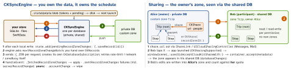

ios-platform · folio
In one line: Three ways to sync: CKSyncEngine (iOS 17) — your store, the engine
schedules push/fetch and you persist its state; NSPersistentCloudKitContainer (iOS 13) —
Core Data mirrors itself into a zone, no sync code; SwiftData — the same mirror,
private database only. Sharing: a CKShare in the owner’s private custom zone
covers one record hierarchy or the whole zone; an accepted share shows up in the
participant’s shared database, and their writes land in the owner’s zone.
Download PDF Print view LaTeX source


Which one?
| store | conflicts | sharing | public | |
|---|---|---|---|---|
| raw ops / async | yours | yours | by hand | ✓ |
CKSyncEngine | yours | yours | engine on shared DB | × |
| Core Data mirror | Core Data | the mirror | ✓ iOS 15 | ✓ iOS 14 |
| SwiftData | SwiftData | the mirror | × | × |
CKSyncEngine — how it works (iOS 17)
- Create it early at launch with the saved
stateSerialization— in any account state; it stays dormant until someone is signed in. Not for the public DB. - Queue work:
.saveRecord(id)/.deleteRecord(id); zones viaadd(pendingDatabaseChanges: [.saveZone(z)]). Build batches withRecordZoneChangeBatch(pendingChanges:recordProvider:)— it stops at the limit. - Schedule is indeterminate (battery, network): pull-to-refresh →
fetchChanges(), “back up now” →sendChanges(); tests:automaticallySync = false. - Keep each record’s system fields (change tag) beside your row, or every save conflicts.
Example — the delegate
final class Sync: CKSyncEngineDelegate {
var engine: CKSyncEngine!
init(db: CKDatabase, saved: CKSyncEngine.State.Serialization?) {
engine = CKSyncEngine(.init(database: db,
stateSerialization: saved, delegate: self)) }
func edited(_ id: CKRecord.ID) { // after the local write
engine.state.add(pendingRecordZoneChanges: [.saveRecord(id)]) }
func handleEvent(_ e: CKSyncEngine.Event,
syncEngine: CKSyncEngine) async {
switch e {
case .stateUpdate(let u): store.persist(u.stateSerialization)
case .fetchedRecordZoneChanges(let c): store.apply(c)
case .sentRecordZoneChanges(let s): merge(s.failedRecordSaves)
case .accountChange(let a): store.handle(a.changeType)
default: break } }
func nextRecordZoneChangeBatch(_ ctx: CKSyncEngine.SendChangesContext,
syncEngine: CKSyncEngine) async -> CKSyncEngine.RecordZoneChangeBatch? {
let todo = syncEngine.state.pendingRecordZoneChanges
.filter { ctx.options.scope.contains($0) }
return await .init(pendingChanges: todo) { store.record(for: $0) } }
}Traps
- Not persisting
.stateUpdate— every launch refetches everything. - A pending
CKRecord.IDbuilt without itszoneIDmeans the default zone — the engine keeps resending(unverified). - SwiftData + an iCloud entitlement syncs by default; a
.uniquemodel then fails to load. - No
CKSharingSupportedin Info.plist — the share link never opens your app. - A child linked by your own reference field is not in a hierarchy share — set
parent.
Core Data mirroring — NSPersistentCloudKitContainer
- Swap the class; capabilities iCloud/CloudKit + Remote notifications. Per store description:
cloudKitContainerOptions(containerIdentifier,databaseScope.private·.public·.shared). Model configurations keep entities local. - Runs off persistent history: set
NSPersistentHistoryTrackingKey+ the remote-change key,automaticallyMergesChangesFromParent = true, a merge policy. - Model rules: no unique constraints; attributes optional or defaulted; relationships optional with an inverse (records arrive out of order); no Deny; no ordered relationships(unverified).
initializeCloudKitSchema()(DEBUG only) uploads sample records so Development has every field — then Deploy. Errors:eventChangedNotification.- Sharing (iOS 15): 2nd store with
.sharedscope;share(_:to:),acceptShareInvitations(from:into:),persistUpdatedShare,fetchShares.
SwiftData + CloudKit
The same mirror. ModelConfiguration(cloudKitDatabase:): .automatic (default — first container in the entitlements) · .private("iCloud.com.example.app") · .none. Same model rules. Private DB only: no public DB, no sharing API.
Sharing — CKShare
- Hierarchy:
CKShare(rootRecord:); children bysetParent(_:); save share with the root. Zone-wide (iOS 15):CKShare(recordZoneID:). A record is in one share, elsealreadyShared. - ≤ 100 participants, each with iCloud.
.readOnly/.readWrite; roles.owner·.privateUser(invited) ·.publicUser(publicPermission>.none: anyone with the link) ·.administrator(iOS 26, withallowsAccessRequests). - UI:
ShareLink+CKShareTransferRepresentation(iOS 16);UICloudSharingController(share:container:)manages people;CKShare.SystemFieldKey.titlenames the invite. - Only the owner deletes the root; a participant deleting the share just leaves.